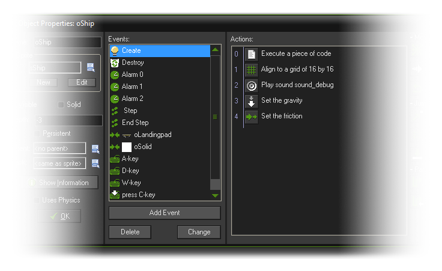
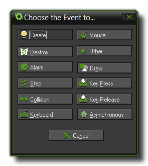
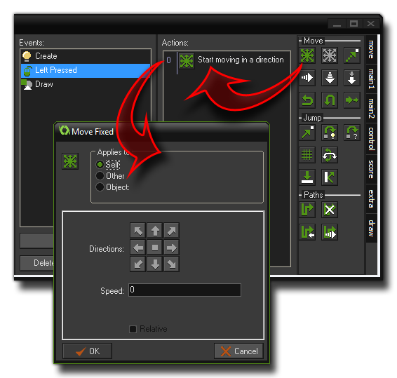

Create Event
Create EventDestroy Event
 Alarm Events
Alarm Events Step Events
Step Events Collision Event
Collision Event

 Keyboard Events
Keyboard EventsMouse Event
 Other Events
Other Events Draw Events
Draw EventsAsynchronous Events
So, what are events? Basically, these are discreet moments in
the game loop where things are made to happen based on what you
have programmed for them. You see GameMaker: Studio works
with cycles of these events - from the moment a room is started to
the moment it is finished there is a game loop running where
every step (a step is a moment in game time, governed by the
room speed setting) a series of events are run, and you can choose
to place code or DnD actions in your instances that respond to
these events. Let's look at a typical object setup with events and
actions:

As you can see in our example object there are a number of
events listed that it should respond to, but initially when you
create an object this list is empty and you must decide which
events you need and what instances of that object should do when
those events are triggered. To add events into the object, you
press the Add Event button found at the bottom of the events
list which will bring up the following window:

That is the list of all the basic events which an object can
respond to, although some of those events also have sub
events to further define behaviours. For example, if you add a
Key Press event you will then get a further window popping
up with the sub events that allow you to select which key
the object should respond to. Once you have selected your event,
you can then add your DnD actions or code into the Actions
section on the right of the event list, which means that you are
telling GameMaker: Studio that when this event is triggered,
these actions should be performed. here is an example image to
illustrate this:

You can change the order of the actions in the list by pressing
and holding the left mouse button and then dragging to move the
selected DnD action icon. Note that if you hold the <Alt> key
while dragging, you can make a copy of the action. You can even use
drag-and-drop between action lists for different objects, either by
having them both open and literally dragging the DnD action icons
between them, or you can click with the right mouse button on an
action which will open a menu where you can edit, cut, copy, paste
and even delete actions (deleting can also be done by using the
<Del> key). You can select multiple actions for cutting,
copying, or deleting by holding the <Shift> key or
<Ctrl> key and clicking on a series of action icons, and
pressing <Ctrl><A> will select all actions. Finally,
when you hold your mouse at rest above an action, a longer
description is given of the action in a pop up window so that you
can see what it does without actually having to open it.
There are two further buttons available at the bottom of the events
list, Delete and Change. As you may well imagine, the
Delete button will permanently remove the currently selected
event and all its associated actions from the object (Events
without any actions assigned to them will automatically be deleted
when you close the form so there is no need to delete them
manually). The Change button can be used to change the
current event into another one, and in this way transfer all the
associated actions to the new event (if the event you try to change
to has already been defined then nothing will happen). These
actions can also be accomplished by simply right clicking on the
event and selecting the appropriate choice from the pop up menu
that will open.
In this way you can "build" behaviours that are triggered by
specific events in your game by just adding in more actions or more
code (you are not limited to the amount you can add for each
event). If you wish to know more about all the available actions
then you can go to the Actions
section of the manual, and the Reference section has all the
information you need on the available code functions.
It should also be noted that the exact order that the events are
going to occur in each step cannot be clearly stated, simply
because it depends on the internal workings of GameMaker:
Studio, which is subject to change as the software develops.
However there are certain events that always run in the same
order. The first set of events that will always happen the same way
are those that occur when a room is first entered and the order of
events for that is:
- Create Event of each instance, followed by the
- Instance Creation Code of each instance
- Game Start Event (this will only be run in the very first room of the game)
- Room Creation Code
- Room Start Event of all instances
It is also worth noting that you can also set the order in which
specific instances are created within the room editor itself. See
the section on Instance Order in the Rooms - The Settings Tab for
further details.
Other than those specific events, the only known order that will
always occur in the same way no matter what belongs to the three
step events and the two draw events. These will always remain
consistent, so if you have code that relies on specific timing
during each step of your game, you should use:
- Begin Step Event
- Step Event - The step event is executed just before instances are put in their new positions.
- End Step Event
All of the sub events for drawing are also always dealt with in
the same order as follows (except for the Resize event,
which is triggered differently):
- Pre Draw Event
- Draw Begin Event
- Draw Event
- Draw End Event
- Post Draw Event
- Draw GUI Begin Event
- Draw GUI Event
- Draw GUI End Event
The sections below deal with each available event:
Create Event
Destroy Event
Alarm Events
Step Events
Collision Event
Keyboard Events
Mouse Event
Other Events
Draw Events
Asynchronous Events